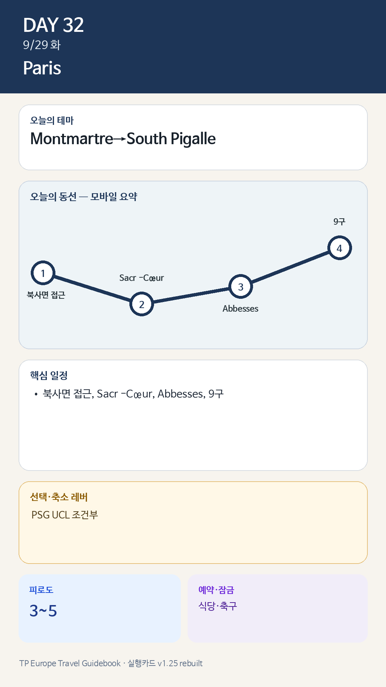

Day 32 · 9/29 화 · Paris
- 핵심 실행
- Montmartre→South Pigalle
- 권장 출발
- 09:00 북사면 접근
- 완충
- 오후 60분 휴식
시간표
| 시간 | 일정 | 실행 포인트 |
|---|---|---|
| 08:30–09:30 | 느린 아침·동네 산책 | 전날 Louvre 피로 회복 |
| 10:00–11:30 | 카페·장보기·자유시간 | 예약 없음 |
| 12:00 | 숙소 점심 | 오후 언덕 대비 |
| 13:30–15:30 | Lamarck-Caulaincourt→Montmartre 북사면 | 오르막을 줄이는 방향 |
| 15:30–16:15 | Sacré-Cœur·전망 | 광장은 짧게 |
| 16:15–18:00 | Abbesses→South Pigalle | 관광지에서 생활·음식권으로 내려옴 |
| 19:30 | Le Bon Georges 또는 9구 비스트로 | 예약 권장 |
| 저녁 조건부 | PSG UCL 홈경기 발표 시 경기로 대체 | 경기 시 오후를 17시 종료 |
피로도
3/5
이 날의 장소
일자별 시간표와 본문 표기에서 찾은 것이다. 하루의 전부가 아니라 장소 카드가 있는 것만 담는다.
이 날의 메모
Montmartre와 South Pigalle — 관광언덕에서 생활동네로 내려오기
Montmartre 북사면의 계단과 주거골목
- 설명: Sacré-Cœur 광장보다 실제 주거지와 언덕구조를 보여준다.
, 축구 시 5/5.
꼭 해볼 것
- Funiculaire보다 북쪽에서 완만하게 접근한다.
- Place du Tertre보다 Rue des Abbesses·South Pigalle의 생활상권을 본다.
- 축구가 있으면 레스토랑 예약은 취소 가능 조건으로 잡는다.
상세 실행 확인
- 최고 리스크
- 언덕·축구조건
- 우선 삭제
- 9구 산책
- 대체안
- Montmartre 핵심만
- 식사·휴식
- Abbesses/9구
- 잠금 필요
- 식당·축구
모바일 카드 이미지

카드의 지도영역은 일정 순서를 보여주는 개요이며 내비게이션이 아닙니다. 실제 도보·운전 경로는 Google Maps에서 다시 계산하세요.